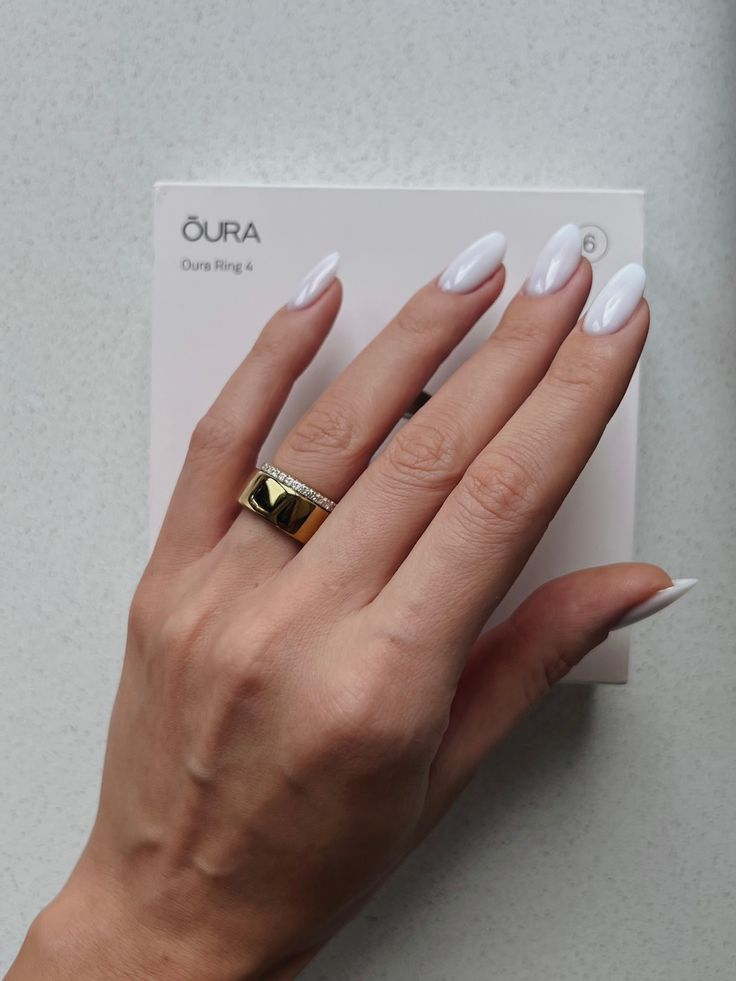

This minimalist ring is inspired by modern smart wearable aesthetics, designed for people who love clean, futuristic, and elegant jewelry styles.
Its smooth, lightweight design makes it comfortable for all-day wear, while its sleek finish gives it a premium and modern look that pairs with any outfit.
A perfect choice for those who love aesthetic fashion, minimal jewelry, or unique modern accessories that stand out without being loud.
View on Amazon & Buy Now